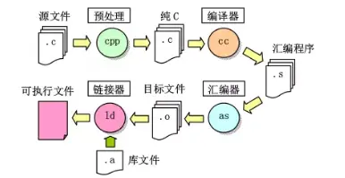
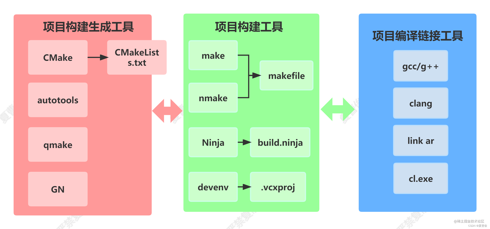

Clion 项目工程基础#
Clion 特点#
CLion 是一款跨平台的集成开发环境（IDE），专为 C 和 C++编程语言开发而设计。它由 JetBrains 公司开发，该公司也是创建 IntelliJ IDEA、PyCharm 等流行 IDE 的公司。
CLion 的代码分析能力非常强大，它能够帮助开发人员识别不同类型的错误和警告，并提供改进代码的建议。这反过来可以帮助开发人员及早发现错误，提高代码质量。
除了代码分析，CLion 还提供了一系列调试工具，帮助开发人员在其代码中查找和修复错误。它支持本地和远程调试，并允许您同时调试多个线程，可以省大量时间。
此外，CLion 还提供了集成的版本控制系统（VCS）支持，使您可以轻松管理代码更改并与其他开发人员协作。它支持 Git、SVN、Mercurial 等流行的 VCS 系统。这确保了开发人员可以无缝高效地协作。
同是它是提供跨平台支持的。它在 Windows、macOS 和 Linux 上可以无缝运行，因此您可以使用您喜欢的操作系统而不会出现任何兼容性问题。尽管如此，我们仍建议使用 Linux 平台为基础进行 cion 的相关开发。
CLion 对于嵌入式开发提供了广泛的支持。它能够轻松地与嵌入式开发工具链集成，并支持多种嵌入式平台和微控制器。
首先，CLion 支持嵌入式开发的调试。它能够与 GDB 和 LLDB 等调试器集成，支持本地和远程调试，并允许您在嵌入式设备上调试应用程序。此外，CLion 还支持 J-Link，ST-Link 和 OpenOCD 等常用的调试器。
其次，CLion 提供了对嵌入式开发环境的良好支持。它能够自动识别嵌入式编译器和工具链，并自动配置工程。它还能够在单个工程中管理多个嵌入式平台，以及自动检测和安装缺失的工具和库。
Clion 对嵌入式开发支持#
除此之外，CLion 还提供了嵌入式开发的代码分析和代码完成功能。它支持针对嵌入式编程的特定代码检查，以帮助您在代码中发现和解决错误。同时，它还提供了代码完成和自动代码重构功能，以提高开发效率。
最后，CLion 还提供了对跨平台嵌入式开发的支持。它支持嵌入式 Linux 平台和各种常见的嵌入式操作系统，例如FreeRTOS和 Zephyr。CLion 还能够集成 CMake，以简化跨平台嵌入式开发的构建和配置。
综上所述，CLion 是一款功能强大且易于使用的集成开发环境，特别适用于嵌入式开发。
Cmake 与 makefile#
Cmake是 Clion 所采用的自动化构建工具，因此在了解 Clion 之前，有必要掌握 Cmake 的基础知识。
CMake 是由 Kitware 公司的 Bill Hoffman 在 2000 年开发的一款跨平台自动化构建工具。它是基于早期的 Make 工具和 CMake 的前身 cmake 1.x 版本发展而来，目的是提供一个更强大、更易于使用和跨平台的自动化构建工具。CMake 最初是为了构建 VTK（Visualization ToolKit）和 ITK（Image Registration and Segmentation Toolkit）等项目而开发的，但现在已成为许多开源项目的构建工具，如 Boost、KDE、OpenCV 等等。
CMake 的主要优势包括：
跨平台支持：CMake 可以自动生成适合不同操作系统和编译器的构建系统文件，使得开发人员可以在 Windows、Linux、MacOS 等不同平台上轻松构建项目。
灵活性：CMake 提供了丰富的配置选项，使得开发人员可以自由地控制编译器选项、链接选项、预处理器定义等。
可扩展性：CMake 提供了模块化的插件系统，允许开发人员编写自定义命令、函数、模块等，以满足不同项目的需求。
自动化构建：CMake 可以自动检测源文件、头文件和库文件等，从而自动构建项目。
与 IDE 的集成：CMake 可以与各种常见的 IDE 集成，如 Visual Studio、Eclipse、Qt Creator 等，使得开发人员可以在自己熟悉的开发环境中使用 CMake。
CMake 可以用于生成各种不同类型的构建系统，如 Makefile、Visual Studio Solution、Xcode 项目等等。CMake 的目标是简化软件开发过程中的构建和配置，尤其是在跨平台和复杂项目中。
为了更深入的了解 cmake 的基础，就必须要从早期的构建工具 Make 说起。
Make 构建工具#
Makefile 是一种用于构建（build）软件的工具，通常用于编译源代码、链接库文件和生成可执行程序。以下是 make 的编译链接过程简图：
:arrow_right_hook: 预处理 —> 编译 —> 汇编 —> 连接

预处理：#
任务：处理宏定义，文件包含，条件编译（加#开头的，命令）
name.c(源代码)—->name.i(改装后的)
gcc -E name.c -o name.i
编译：#
任务：检查语法
name.i(改装后的)—->name.s(汇编代码)
gcc -S name.i -o name.s
汇编：#
任务：汇编代码转机器码
name.s(汇编代码)—>name.o(二进制目标文件)
gcc -c name.s -o name.o
链接：#
任务：将经过编译的若干个中间文件（二进制目标文件）和系统库（.a/.lib）链接为可执行文件
name.o—->a.out/name.exe（可执行程序）
静态链接：整个拷贝库文件进可执行程序
动态链接：可执行文件中加入了所调用函数的描述信息，运行时再去链接动态库（DLL），根据链接产生的重定位信息，去寻找和执行 DLL 中相应的函数代码。
gcc name.o -o name
makefile 书写#
target... : dependency...
command
...
...
target：目标文件(.o)/可执行文件/标签(Label)
dependency：生成 target 需要的依赖
command：make 真正要执行的命令（任意的 shell 命令） 检查，dependency 中文件若更新，此 make 命令就会被执行，会引起链式反应
make 命令执行#
make
执行第一个 target，根据依赖性向后寻找并执行
make Label
去 Label 处开始执行，如 clean（clean 无依赖，不用检查）
删除所有中间文件
clean :
rm -f \*.o
make clean执行
简易版本的 makefile 编写#
# `Makefile`示例
# 目标：依赖
hello: main.o hello.o
gcc -o hello main.o hello.o
# 目标：依赖
main.o: main.c
gcc -c main.c
# 目标：依赖
hello.o: hello.c
gcc -c hello.c
clean :
rm -f *.o
在上面的 Makefile 中，我们定义了三个目标：hello、main.o和hello.o。hello目标依赖于main.o和hello.o两个文件，main.o和hello.o分别依赖于对应的源代码文件。
当我们在命令行上输入make hello命令时，Make 会读取 Makefile 文件并根据依赖关系来构建hello目标文件。由于hello目标文件依赖于main.o和hello.o两个文件，Make 会检查它们的时间戳来确定是否需要重新构建。如果main.o和hello.o的时间戳比hello文件的时间戳新，则需要重新构建hello文件。
如果需要重新构建，Make 会执行所定义的命令来生成hello文件。在本例中，我们使用 gcc 编译器将main.o和hello.o链接起来生成可执行文件hello。
以上是一个简单的例子，但是，当项目规模变大时，makefile 就变得越来越复杂，像魔鬼一样令人恐怖。此外，还有其他的严重问题构成了 makefile 的障碍，如下：
学习曲线较陡峭：相比于其他构建工具，Makefile 的语法和规则比较复杂，需要一定的学习成本。
难以维护：当项目规模变大，Makefile 会变得越来越复杂，不易于维护和扩展。
平台依赖：Makefile 是一种平台依赖性很强的构建工具，同一个 Makefile 文件可能在不同的操作系统上需要进行不同的修改。
不适用于所有项目：Makefile 适用于 C/C++等编译型语言的构建，但不适用于其他类型的项目，如 Java、Python 等。
缺乏依赖管理：Makefile 的依赖关系是通过文件时间戳来检测的，但如果依赖关系过于复杂，Makefile 就难以处理。
此外，除了 GNU Make ，还有 QT 的 qmake ，微软的 MS nmake，BSD Make（pmake），Makepp，等等。这些 Make 工具遵循着不同的规范和标准，所执行的 Makefile 格式也千差万别。这样就带来了一个严峻的问题：如果软件想跨平台，必须要保证能够在不同平台编译。而如果使用上面的 Make 工具，就得为每一种标准写一次 Makefile ，这将是一件让人抓狂的工作。
居于上述理由，人们可是制作更为简单易行，跨平台的构建工具，这时 cmake 就孕育而生了。
Cmake 基本概念#
CMake 就是针对上面问题所设计的工具：它首先允许开发者编写一种平台无关的 CMakeList.txt 文件来定制整个编译流程，然后再根据目标用户的平台进一步生成所需的本地化 Makefile 和工程文件，如 Unix 的 Makefile 或 Windows 的 Visual Studio 工程。从而做到“Write once, run everywhere”。显然，CMake 是一个比上述几种 make 更高级的编译配置工具。一些使用 CMake 作为项目架构系统的知名开源项目有 VTK、ITK、KDE、OpenCV、OSG 等 。在 linux 平台下使用 CMake 生成 Makefile 并编译的流程如下：
写 CMake 配置文件 CMakeLists.txt 。
执行命令
cmake PATH或者ccmake PATH生成 Makefile（ccmake和cmake的区别在于前者提供了一个交互式的界面）。其中，PATH是 CMakeLists.txt 所在的目录。使用
make命令进行编译。
以下是 CMake 的一些基本概念：
CMakeLists.txt 文件：CMakeLists.txt 是 CMake 项目的核心配置文件，它包含了项目的名称、源文件、目标文件等信息。
源目录和构建目录：源目录是项目源代码的根目录，而构建目录是指生成构建系统文件的目录。CMake 建议将构建目录与源目录分离，以便于保持源目录的干净和整洁。
CMake 命令：CMake 使用命令来定义项目的构建过程。CMake 命令可以用来定义项目的名称、源文件、编译器选项、链接选项等信息。
变量：变量在 CMake 中用于存储和传递值。CMake 支持三种类型的变量：字符串变量、列表变量和缓存变量。
宏：宏是一种定义重复代码的方式。在 CMake 中，可以使用宏来定义和调用函数。
模块：CMake 模块是一组可重用的 CMake 命令和函数，它们可以在多个项目中共享和使用。
CMake 的常用命令和函数：常用命令和函数包括 add_executable、add_library、target_link_libraries、include_directories、find_package 等等。
cmake 的处理过程如下：

可以 cmake 是一种项目构建的生成工具，不但用与 make 生成 makefile，同时可以和其他构建工具，如 ninja，gradle 等一同工作。
Cmake 快速入门与相关书籍#
相关书籍推荐
《CMake 实践指南》 作者：熊英飞、彭泽源
该书内容详实，从 CMake 基础语法、常用命令、函数和变量到实际项目实践都有涉及，适合初学者入门以及实际项目开发者参考。
《跟我一起写
Makefile》作者：韩天峰该书介绍了
Makefile的基本语法和使用方法，同时也有对比 CMake 的介绍。对于初学者来说，可用来作为入门的学习资料。《CMake 入门实战》作者：李海峰
该书内容包括 CMake 的基本语法、变量和函数、项目构建、跨平台构建等方面，并配有大量实战案例，适合实际项目开发者参考。
《深入浅出 CMake》作者：李泽阳
该书从 CMake 的基础语法和常用命令入手，深入探讨了 CMake 的内部机制和实现原理，适合对 CMake 深入理解和研究的开发者参考。
Clion 项目结构#
CLion 项目结构与其他 C 和 C++ 项目结构非常相似，但有一些特定于 CLion 的功能。
在 CLion 中，一个项目包含以下内容：
项目文件夹：包含项目文件、源代码和其他文件。
CMakeLists.txt文件：CLion使用 CMake 构建系统来管理项目构建。CMakeLists.txt` 文件描述了项目的构建过程。它指定源代码文件、可执行文件的名称和位置、库的名称和位置等。.idea文件夹：包含CLion的项目配置文件。这些文件包括编译器选项、代码样式设置、调试设置等。这个文件夹是可选的，如果不存在，CLion会在打开项目时自动生成它。bin文件夹：包含编译后的可执行文件。build文件夹：包含构建系统生成的临时文件和中间文件。include文件夹：包含项目使用的头文件。lib文件夹：包含项目使用的库文件。src文件夹：包含项目的源代码文件。
CLion 的项目结构可以根据项目的需要进行调整和扩展。例如，可以在项目中添加子目录，将源文件分组为不同的目录，或者将库和头文件分开放置。
假设有一个名为 MyProject 的 C++ 项目，该项目包含以下文件和文件夹：
MyProject/：项目文件夹。MyProject/CMakeLists.txt：描述项目构建过程的 CMake 文件。MyProject/.idea/：CLion的项目配置文件夹。MyProject/bin/：包含可执行文件。MyProject/build/：包含构建系统生成的临时文件和中间文件。MyProject/include/：包含头文件。MyProject/lib/：包含库文件。MyProject/src/：包含源代码文件。
下面是一个示例 **CMakeLists.txt**文件，它描述了一个简单的 MyProject 项目的构建过程：
cmake_minimum_required(VERSION 3.10)
project(MyProject)
set(CMAKE_CXX_STANDARD 11)
# 指定源文件
set(SOURCE_FILES
src/main.cpp
src/foo.cpp
src/bar.cpp
)
# 指定头文件
set(HEADER_FILES
include/foo.h
include/bar.h
)
# 添加可执行文件
add_executable(MyProject ${SOURCE_FILES} ${HEADER_FILES})
# 指定库文件路径
link_directories(lib)
# 指定需要链接的库
target_link_libraries(MyProject libfoo.a libbar.a)
在上面的示例中，CMakeLists.txt 文件指定了项目的源代码文件和头文件。它还定义了一个可执行文件 MyProject，它由源代码文件和头文件组成。项目中使用的库文件位于 lib/ 文件夹中。通过使用 link_directories() 和 target_link_libraries() 函数，可以将库文件链接到可执行文件中。
CLion 会读取这个 CMakeLists.txt 文件，并根据它来构建项目。 CLion 还会自动创建一个 .idea 文件夹，并在其中生成一些配置文件。当您打开 MyProject 项目时，CLion 会读取这些配置文件，并应用它们来设置项目的编译器选项、代码样式设置、调试设置等。
clion 的图形化过程我们将在 esp-idf 中，以及具体实验内容中一并介绍。